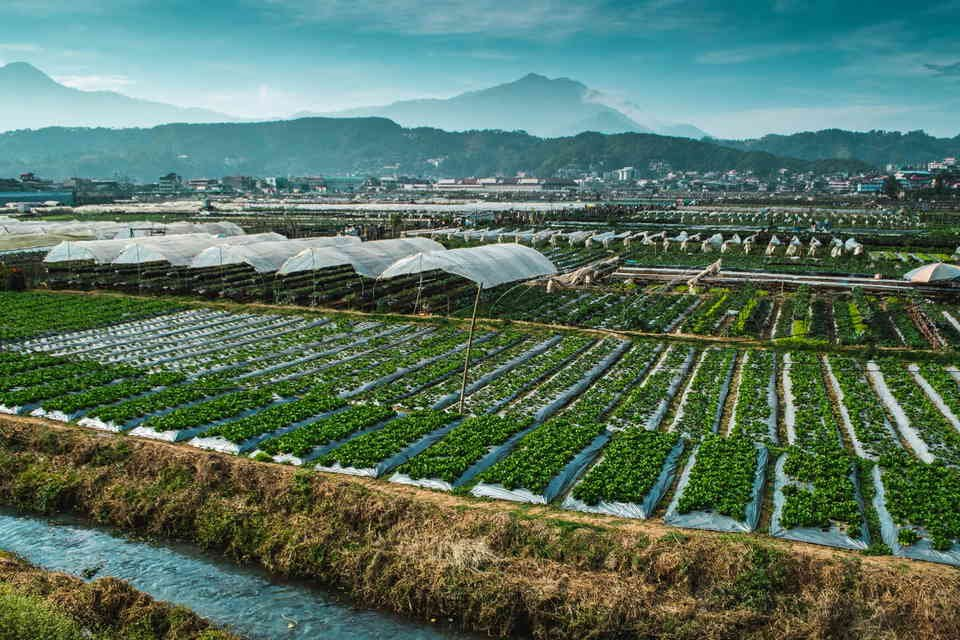

Baguio and La Trinidad sit right next to each other in Benguet, and most visitors move between them without noticing the boundary. Baguio is the city: Session Road, Burnham Park, the markets, cafés and most of the hotels. La Trinidad, the provincial capital just to the north, is the valley that feeds it, with the strawberry farm, flower and vegetable fields, the painted houses of the Valley of Colors and the hills of Mount Kalugong. Plan two or three days in Baguio and at least half a day in La Trinidad, base yourself in Baguio, and travel between the two by jeepney or taxi in 15 to 45 minutes, depending on traffic.
This guide treats the two as one trip. It covers what each place is best for, how to get there and get around, the La Trinidad stops most visitors miss, when to go for strawberries and cool weather, and a simple three-day plan that mixes both.
Prices and seasons shift from year to year, especially for strawberry picking, so use the figures here as a guide and check on the day.

The city base
- Session Road, Burnham Park and the markets
- Most hotels, cafés and restaurants
- Gardens, Camp John Hay and the night market
The valley next door
- The strawberry farm and vegetable fields
- Valley of Colors and the Bell Church
- Mount Kalugong views and Bahong rose farms
How Baguio and La Trinidad Fit Together
Think of Baguio as the base and La Trinidad as the countryside on its doorstep. Baguio has the restaurants, nightlife, parks and most accommodation. La Trinidad is quieter and greener, with a valley floor covered in farm plots and hillsides that look over both towns. They are connected by the road that runs north from the city past Km. 3 and Km. 6, and the trip is short when traffic behaves.
For most travellers, staying in Baguio and making La Trinidad a half-day or full-day trip works best. Budget travellers and anyone focused on the farms sometimes stay in La Trinidad instead, where homestays and guesthouses tend to cost less.
Getting There
Buses from Metro Manila run to Baguio from Cubao, Pasay, Sampaloc, PITX and other terminals, and the trip takes around four to six hours. Our guide to taking the bus from Manila to Baguio compares operators, classes and fares. There is no regular bus straight to La Trinidad from Manila, so go to Baguio first and continue from there.
Getting Between Baguio and La Trinidad
- Jeepney: La Trinidad-bound jeepneys leave from the downtown area near the city market and Bokawkan Road. Fares are low, and the ride is the most local way to make the trip.
- Taxi: Baguio's metered taxis go to La Trinidad. Expect a few hundred pesos at most for a one-way trip, depending on traffic and where you stop.
- Your own car: Convenient for hopping between stops, but parking near the strawberry farm fills up on weekends and holidays.
Traffic is the main variable. Weekday mornings are quickest. Weekend afternoons and holiday seasons can turn a short ride into a long one, so start early.
Baguio: What to Prioritise
Baguio rewards slow walking. Spend time on Session Road and in Burnham Park, where boats are back on the lake. Visit the Botanical Garden and the new Baguio Arboretum next door, wander through Camp John Hay, see Mines View Park and the Good Shepherd Convent for jam, and finish an evening at the Harrison Road night market.
Food is a big part of any visit, from strawberry taho to sizzling plates and Cordillera dishes. Good Shepherd ube jam and strawberry jam are the classic things to bring home.
La Trinidad: The Stops Worth Your Time
The strawberry farm
La Trinidad's strawberry farm, near Benguet State University, is by far the town's best-known attraction and draws far more visitors than anything else in the municipality. Walking in is free. Strawberry picking is charged by the kilo, usually with a minimum, and the price changes with the season and demand; recent quotes have been several hundred pesos per kilo, well above market prices, because you pay for the experience. Stalls around the farm sell strawberries, jams, strawberry wine, vegetables and souvenirs.
The season usually runs from about November to May, with the best picking often from February to April. Go in the morning, before the heat and the tour buses.
The Valley of Colors
On the hillside at Stobosa, along the Km. 3 stretch between Baguio and La Trinidad, dozens of houses were painted into one huge, colourful mural. It is best seen from the roadside viewing areas, and it makes a quick stop on the way to or from the strawberry farm. Remember that these are people's homes; take your photos from the road.
The Bell Church
Close to the Baguio boundary, the Bell Church is a Chinese-style temple complex with pagoda roofs, dragons and gardens. It is a calm stop, a short ride from the city, and pairs easily with the Valley of Colors. Dress modestly and keep your voice down.
Mount Kalugong and the viewpoints
For a view over the La Trinidad valley, head up to Mount Kalugong, known for its limestone rock formations and pine trees, or other hillside viewpoints around the town. Wear proper shoes and go on a clear morning, when the valley and the farm plots below are at their best.
Flower farms
Barangay Bahong in La Trinidad has been called the Rose Capital of the Philippines since 1998. Some farms there open to visitors, especially around Valentine's Day and the Panagbenga festival. Ask at the municipal tourism office about access and fees before going, since roads are narrow and farms are private.
When to Go
December to March is the classic window: cool, mostly dry, and within strawberry season. January has the coldest mornings, and February brings Panagbenga, the flower festival, with the biggest crowds of the year in Baguio. Our Panagbenga weekend itinerary shows how to combine the parades with La Trinidad's flower and strawberry farms.
The rainy season, roughly June to October, brings fog, heavy showers and the occasional road closure on the routes up the mountain. It is quieter and cheaper, but keep plans flexible.
A Simple Three-Day Plan
Day 1 · BaguioArrive and walk the centre
- AfternoonArrive and check inBase yourself near Session Road or Burnham Park
- Late afternoonSession Road, Burnham Park and the city marketAll within walking distance of each other
- EveningDinner, then the Harrison Road night marketThe market usually sets up from about 9 p.m.
Day 2 · La TrinidadFarms, colours and valley views
- EarlyJeepney or taxi to La TrinidadLeave early to beat the traffic
- MorningStrawberry farm near Benguet State UniversityBest before the heat and the tour buses
- MiddayValley of Colors and the Bell ChurchQuick stops on the way back toward Baguio
- AfternoonMount Kalugong, if you have energyGo on a clear day for the valley view
- EveningDinner back in Baguio
Day 3 · Baguio's green sideGardens, pines and pasalubong
- MorningBotanical Garden and the Baguio ArboretumOne ticket covers both
- MiddayCamp John Hay and Mines ViewA short taxi ride apart
- AfternoonPasalubong, then head homeGood Shepherd ube jam and strawberry jam are the classics
Practical Tips
Small things that make the two-town trip easier.
Pack layers
Mornings and evenings are cool all year and properly cold from December to February. A fleece and a light jacket cover most days.
Carry small bills
Jeepneys, farm stalls and market vendors mostly take cash, and breaking big notes can be hard.
Start early on weekends
The road between Baguio and La Trinidad fills up fast. Leave in the morning and come back before late afternoon.
Check hours on the day
Opening times, picking prices and fees change with the season, especially during holidays and Panagbenga.
Seen together, Baguio and La Trinidad make a fuller trip than either alone: the city for walking, eating and the cool evenings, and the valley for the farms and the views that explain where so much of Baguio's food and flowers come from.
Photo credit: Abigail Marquez on Pexels.


Comments
No comments yet. Been here recently? Share a tip or ask a question.
Leave a Reply